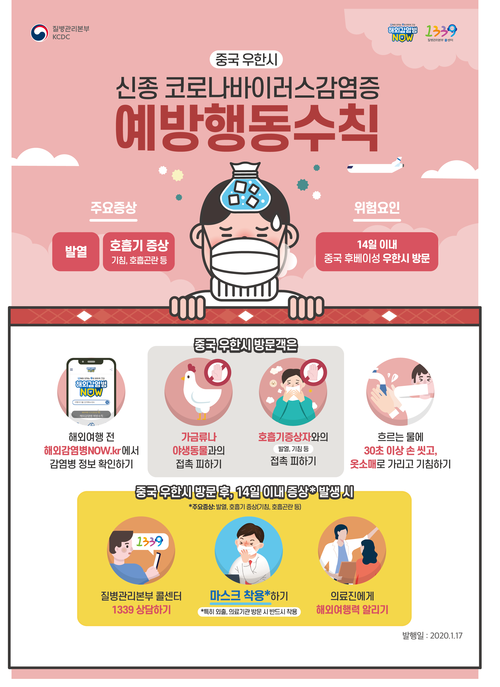

코로나바이러스(영어: Coronavirus)는 코로나바이러스과(영어: Coronaviridae)의 코로나바이러스아과(Coronavirinae)에 속하는 RNA 바이러스로, 사람과 동물의 호흡기와 소화기계 감염을 유발한다.
주로 점막전염, 비말전파로 쉽게 감염되며, 사람은 일반적으로 경미한 호흡기 감염을 일으키지만 드물게 치명적인 감염을 일으키기도 하며, 소와 돼지는 설사, 닭은 호흡기 질환이 발생하기도 한다.